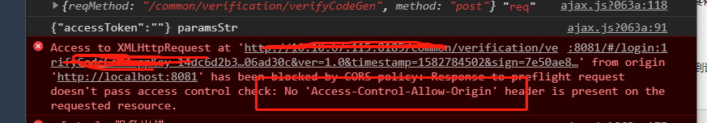
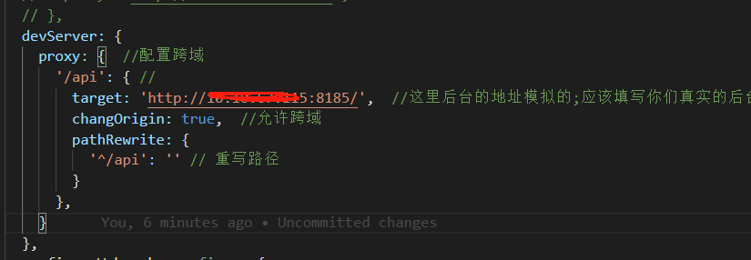
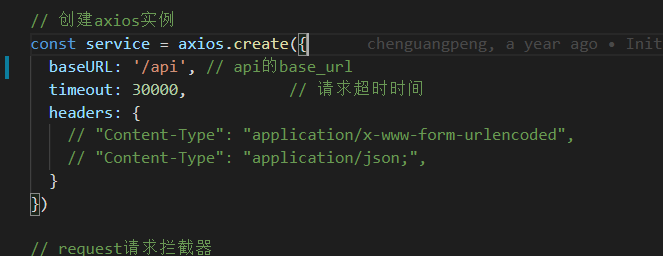
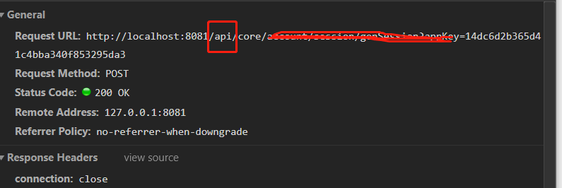

什么是跨域
跨域问题的出现是因为浏览器的同源策略问题，所谓同源:就是两个页面具有相同的协议（protocol），主机（host）和端口号（port），它是浏览器最核心也是最基本的功能，如果没有同源策略我们的浏览器将会十分的不安全，随时都可能受到攻击。
当我们请求一个接口的时候，出现如：Access-Control-Allow-Origin 字眼的时候说明请求跨域了

如何解决跨域问题
1.使用jsonp实现，网页通过script标签向服务器请求json数据，服务器受到请求后，将数据放在一个指定名字的回调函数的参数里面传给前端。
1 | <script src="http://www.test.com/getData?callback=getData"></script> |
2.使用Jquery ajax实现，
1 | $.ajax({ |
3.在vue开发中实现跨域：在vue项目根目录下找到vue.config.js文件（如果没有该文件则自己创建），在proxy中设置跨域
1 | devServer: { |
在vue中使用proxy进行跨域的原理是：将域名发送给本地的服务器（启动vue项目的服务,loclahost:8080），再由本地的服务器去请求真正的服务器。
以下是我在开发vue项目中实现跨域的步骤：
1.在proxy中设置要访问的地址，并重写/api为空的字符串，因为我们真正请求的地址是没有带/api，这个重写很重要!!!

2.在创建axios实例的时候将baseURL设置为/api ,这时候我们的跨域就已经完成了。

3. 假如请求的真正地址为：http://121.121.67.254:8185/core/getdata/userInfo,但我们在浏览器上会看到是这样的： http://localhost:8080/api/core/getData/userInfo ,多了个/api，但并不影响我们请求数据。


...
...
00:00
00:00
Copyright 2021 sunfy.top ALL Rights Reserved